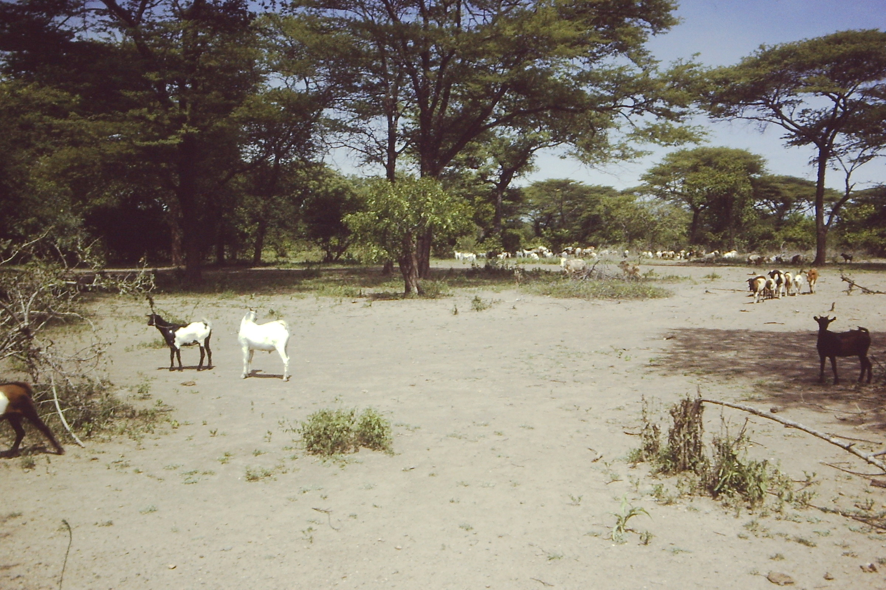

A shared pasture. Five farmers. Each wants to add more livestock — but
the grass is finite. When everyone maximises their own herd, the common
resource collapses. Can you find the strategy that sustains the commons?
The Dilemma

The fence-line reality of the commons: An unmanaged pasture stripped by competitive overgrazing stands in stark contrast to sustainably managed grassland. Without institutional limits, each animal added provides +1 personal benefit while distributing the degradation cost across all users.
Individual payoff — each extra animal earns money for the farmer
Shared cost — overgrazing degrades the pasture for everyone
Nash Equilibrium — the "rational" choice leads to collective ruin
Solutions: quotas, taxes, privatisation, or voluntary cooperation
The Shared Pasture
Pasture Health
100%
Your Decision — Each Round, Choose How Many to Graze
You (Farmer 1)
3
Herd size: 3
Farmer 2 (AI)
3
Strategy: Greedy
Farmer 3 (AI)
3
Strategy: Cooperative
Farmer 4 (AI)
3
Strategy: Tit-for-Tat
Farmer 5 (AI)
3
Strategy: Random
Resource & Wealth Over Time
Green = pasture health · Colored lines = each farmer's cumulative wealth
Garrett Hardin (1968)
Published "The Tragedy of the Commons" — arguing that shared resources are inevitably overexploited without regulation.
Nash Equilibrium
Each farmer's "best response" is to add livestock — even knowing the system will collapse. No individual can improve their outcome by changing alone.
Elinor Ostrom (1933–2012): First woman to win the Nobel Memorial Prize in Economic Sciences (2009). Her worldwide field studies showed that local communities frequently design sustainable institutions — clear boundaries, mutual monitoring, graduated sanctions, and low-cost conflict resolution — to govern shared pastures, forests, and irrigation systems without tragedy.
Photo: Holger Motzkau / Wikimedia Commons · CC BY-SA 3.0
Elinor Ostrom
Won the 2009 Nobel Prize by proving communities can self-govern commons successfully — without privatization or top-down regulation.
Modern Commons
Climate change, ocean fisheries, and internet bandwidth are today's "commons." The same game theory applies at planetary scale.
Centuries of Evidence
Commons That Survived: Ostrom's Principles in History
Garrett Hardin assumed ruin was inevitable without private ownership or centralized state control. But around the globe, real communities have successfully managed shared grasslands, fisheries, and irrigation channels for hundreds of years.
Irrigation Self-Governance · 10th Century to PresentTribunal de las Aguas de Valencia (Water Court). Operating continuously for over a millennium, this open-air court gathers elected farmers outside Valencia Cathedral every Thursday to resolve canal irrigation disputes orally without lawyers or fees. It is a living example of Elinor Ostrom’s core principles: local self-monitoring, transparent conflict resolution, and community-enforced quotas.
Credit: Bernardo Ferrándiz Bádenes (1865) / Museu de Belles Arts de València / Wikimedia Commons · Public domain.Pasture Commons · 1086 to PresentPort Meadow, Oxford: 1,000 Years of Common Grazing. Recorded in William the Conqueror's 1086 Domesday Book, this 300-acre floodplain has been grazed for over ten centuries without environmental destruction. The Freemen of Oxford preserve its ecology through customary herd limits ('stints') and mutual monitoring, proving that shared grazing does not inevitably lead to collapse.
Credit: Wikimedia Commons · CC BY-SA 3.0.